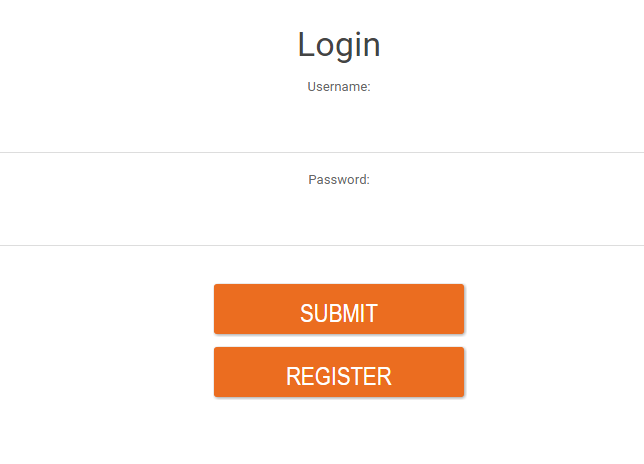
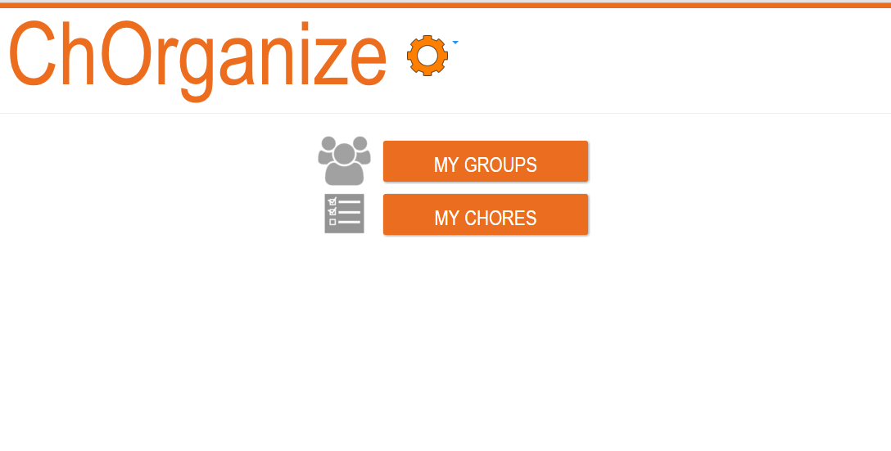

Walkthrough and Features
Login Page
This will be the first page that you see as the user. You can see that there are two buttons to click on: login and register. As a new user you should click on register. A form will load, and you will fill out the entire form. After submitting the form, it will return you back to the login page where you can enter your login credentials. If the login is successful it will take you to the homepage.
Home Page
On the homepage, there is a my groups button and a my chores button. There is also a functional gear button at the top that has drop down options to edit your profile information and logout. Since you don't have any groups or chores created yet. You need to click on my groups to create a group.
Group Page
On the group page, the first thing that you should do is type in the group name on line provided above the add group button. Next click the add group button, and your new group button should appear. Next click on your new group button to create a new chore.

Chores Page
On the chores page click add new chore and fill out the form. Next click on the add chore button. Afterwards we need to pick up the chore, so we click on the pick up button on the left of the chores button. We can mark this chore complete, or delete it if we want. You can also sort the chores by due date and user. We also have the option of adding a new group member, and seeing additional statistics of the members in the group. To see the details of the chore, click on the chore button.

ChoresItem Page
On the chores item page, you can see the group the chore is in, the person it's assigned to, the due date, and the description of the chore. You also have the option of completing the chore. If you press complete chore it will delete the chore of the group's chores page.

My chores Page
On the home page there is a my chores button. when we click that button we get to the my chores page, which lists all the chores that are assigned to us.